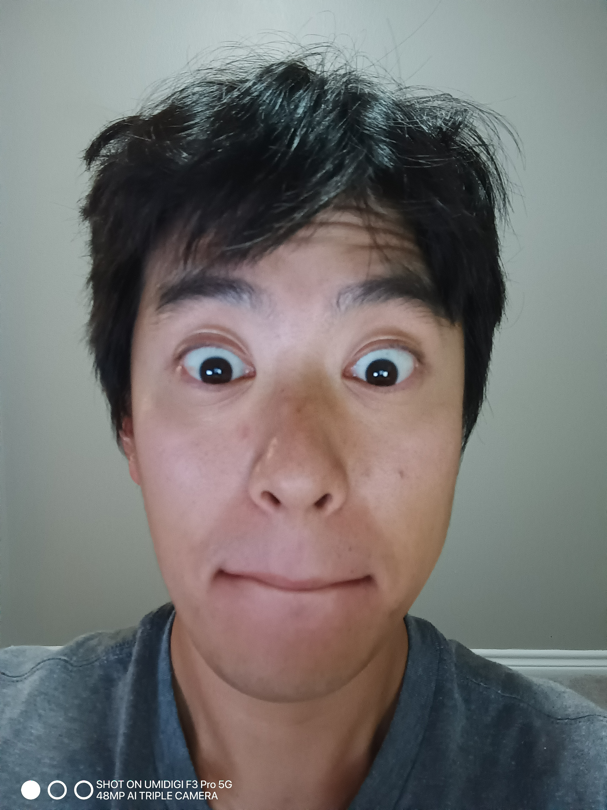

Picture of Myself

SUMMARY OF QUALIFICATIONS
Actively pursuing a Master's in Computer Science at Georgia Tech, specializing in Computing System. Enhanced by
exceptional interpersonal skills cultivated through experience as a construction professional. Renowned for collaborative
prowess and rapid learning abilities. Eager to apply evolving IT expertise, complemented by a deep interest in the field.
- Android App development
- Experienced in Flask
- Proficient in Python, Java
- Strong Communication
- Proven Problem
- Solving skill
- Team Collaboration
EDUCATION
- 2012 - 2014 University Of Alberta - Bachelor of Science in Software Engineering Co-op
- 2014 - 2018 University Of Alberta - Bachelor of Science in Petroleum Engineering Co-op
- 2023 - Georgia Institute of Technology - Master of Science in Computer Science
WORK EXPERIENCE
Lead Field Engineer
Kiewit - Sherman, Texas, United State
November 2021 - Current
- Led a team of 4 Field Engineers with a focus on fostering collaboration, ensuring clear communication,
and maximizing individual strengths.
- Developed Scope of Work documents, facilitating seamless collaboration between subcontractors and
project stakeholders.
- Orchestrated daily and weekly meetings, providing strategic guidance and updates to the team.
- Conducted presentations for crews and Field Engineers, ensuring alignment with project objectives and
milestones.
- Supervised subcontractor activities to uphold strict compliance with design, specifications, OSHA, and
regulatory standards, emphasizing safety and quality assurance.
- Crafted and refined Detailed Execution Plans, ensuring efficient project execution and alignment with
project objectives